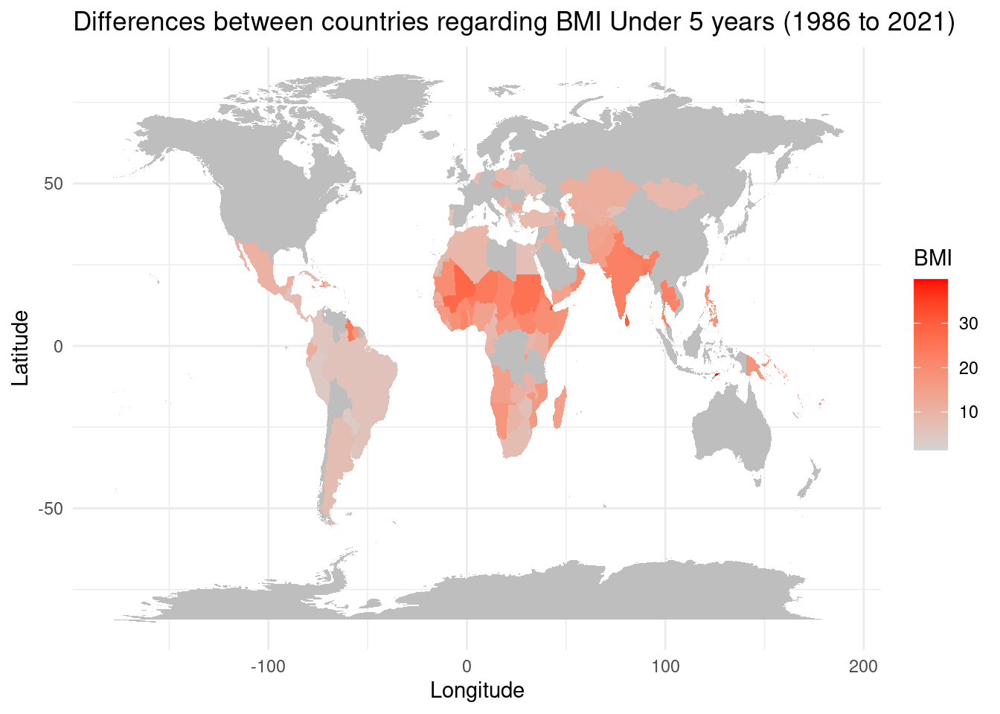
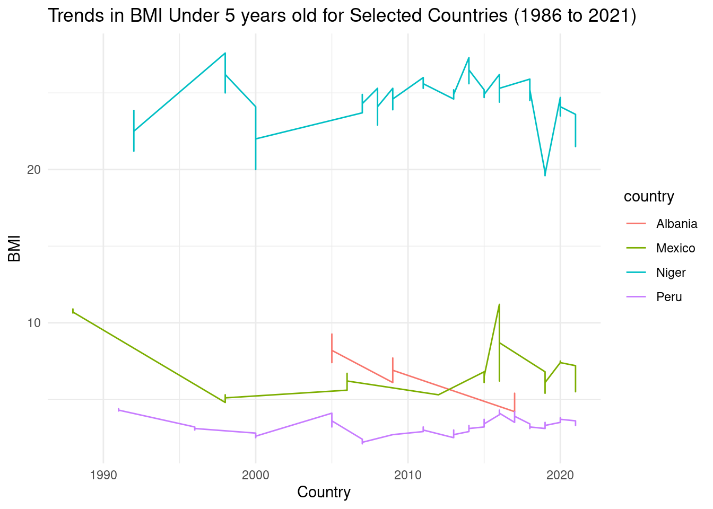
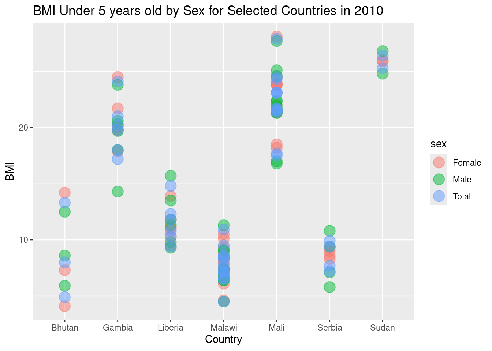
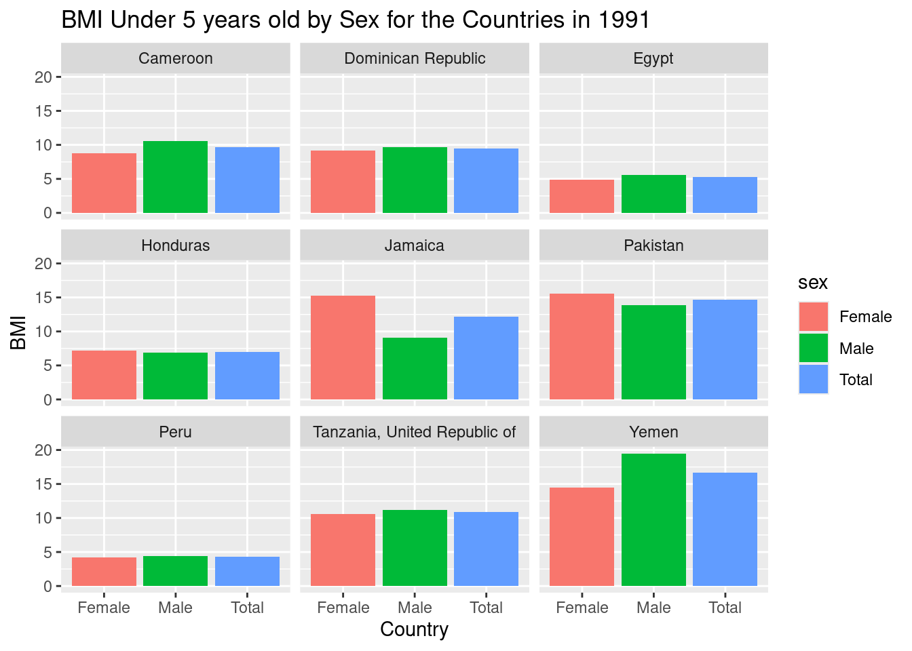

Quarto Assignment MT5000
Exploring the BMI under 5 years old since 1986 to 2021
This report aims to elucidate the Body Mass Index (BMI) trends among children under 5 years old across the globe, spanning from 1986 to 2021. The analysis is rooted in data-driven insights that underscore the multidimensional factors affecting childhood nutrition, including socioeconomic status and health policies.
GLOBAL DISPARITIES IN CHILDHOOD BMI
The world map of childhood BMI indicates significant disparities between countries. Regions with higher BMI values, signifying either a tendency towards obesity or a healthier weight status, are starkly contrasted with those exhibiting lower BMIs, which may point to undernutrition. This global overview highlights the geographical inequality in child health and the urgency for targeted health interventions.
VARIED TRENDS ACROSS NATIONS
An examination of trends in selected countries—Albania, Mexico, Niger, and Peru—reveals diverse trajectories. While some countries display a relatively stable BMI over the years, others show significant fluctuations. These patterns reflect the intricate interplay of health, nutrition, and socioeconomic factors that shape the well-being of children.

GENDER DIFFERENCES IN CHILDHOOD BMI
The scatter and bar charts for 2010 and 1991, respectively, provide a lens into gender-based differences within countries. Notably, some countries exhibit negligible differences between males and females, whereas others show pronounced disparities. These findings underscore the necessity of incorporating a gender perspective into nutritional policies.


CONCLUSION
The analysis underscores a critical need for nuanced and sustained public health strategies tailored to the unique challenges of different regions and populations. It is evident that a one-size-fits-all approach to combating childhood obesity and undernutrition is ineffective. Instead, policies must be grounded in comprehensive data analysis, considering the temporal trends and sex-based differences revealed in this study.
FURTHER CONSIDERATIONS
Future research should delve deeper into the underlying causes of the observed disparities, examining factors such as food security, healthcare access, and educational initiatives on nutrition. Only with a holistic understanding can we devise robust strategies to ensure that all children, irrespective of their country or gender, can achieve a healthy BMI and, by extension, a promising start to life.